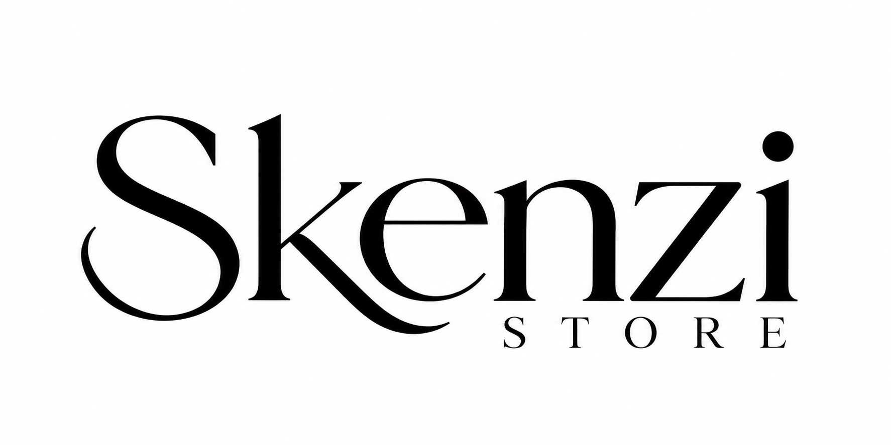
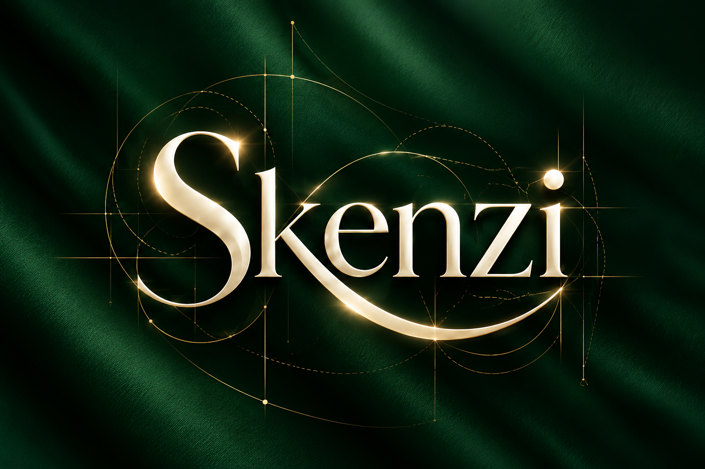
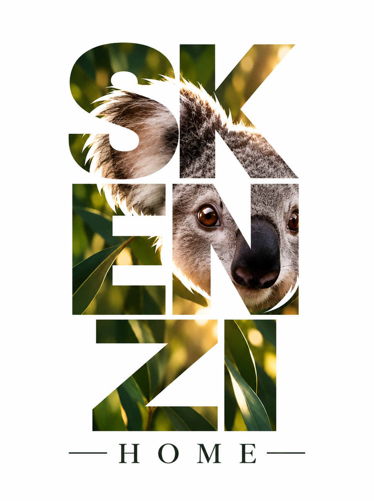

CASO DE ESTUDIO · RENAX
SKENZI
Una marca que creció sin perder su esencia.
11 años de evolución.
Una marca que creció sin perder su esencia.
11 años de evolución.
SKENZI necesitaba una imagen que acompañara su nueva etapa, conservando la esencia y la historia construida durante estos años.
RENAX renovó la imagen de SKENZI desde diferentes puntos de contacto, manteniendo su esencia y proyectándola hacia una nueva etapa.


Una imagen pensada para proyectar una nueva etapa, manteniendo la esencia, cercanía y confianza construidas a lo largo de los años.
La evolución de SKENZI también abrió una nueva línea de negocio: productos para el hogar vendidos por Internet.
Una forma de facilitar la compra, ahorrar tiempo y llevar la marca a nuevos espacios.
